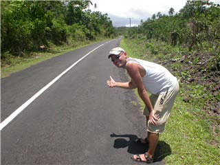
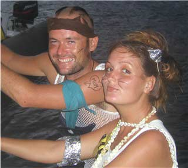

For augeblikket sit eg aleine på skuta. Frode har reist ut mellom øyene med den canadiske motorbåten Shorleave. Ein seglebåt har gått på eit rev, og etter to dagar med iherdig jobbing utan hell, vil Shorleave sette sine 500 hestekrefter til disposisjon. (nevnte eg at Petrell har 23?). Det kan verke som om vi har ei merkeleg tiltrekningskraft. For andre gong på fire veker, har vi vore involvert i arbeidet med å få ein båt av revet.

Første båt, var New Zealandske Music. Mannskapet består av mor, far og to born på 11 og 8 år. Dei har segla rundt i verda i 10 år, og var på veg heim til New Zealand… Det må vel vere maks uflaks? Det var ikkje noko vakkert syn som møtte oss då vi såg Music ligge og vippe frå side til side. Først var heile eine sida under vatn, snart den andre. Det knirka og knakte, det dunka og rista. Til alt hell greidde vi å få båten av revet, og snart var Music på eigen kjøl att. Båten er ein solid stålbåt og pappaen om bord ein "handyman" utan like. Dei var heldige trass alt, og er no på Fiji, klare for siste etappe heimover.Båten som no er på grunn har ei anna historie. Skipparen er ein amerikansk soloseglar, og har god erfaring med å gå på grunn. Rykta seier det er fjerde gongen her i Stillehavet… Vi får håpe det vert siste gong. Ikkje minst for båten sin skuld, som er av glassfiber, og sikkert noko trøytt og sliten…
PÅ TAMPEN AV STILLEHAVET
Vi les november på kalendaren, og kalendarguten vår, Simen, har på seg ullue. Sjølv om vi ikkje ventar noko sympati frå dykk der heime, kan vi kjenne at det vert kaldare i veret her hos oss og. Vi er for augeblikket i Vava'u gruppa på Tonga, og trippar etter å sette kursen endå lenger sør. Vi vil ha perfekte forhold når vi går mot New Zealand, så vermeldinga på radioen er dagens store hending. Kanskje i morgon? Kva, ikkje før om ei veke?? Vi asar kvarandre opp som studentar før ein eksamen. Alle har høyrd rykter om lavtrykk, andre ser berre solskinn. Her vi er no ser vi solskinn, men vi har erfart at vi finn noko anna der ute på havet. På veg hit fekk vi ein god kuling og pøsregn og vi kjende med eitt at røynda var i ferd med å innhente oss -her på tampen av Stillehavet.
Vi har pakka bøkene våre inn i plastposar, fordekket er prega av desperate silikonangrep, vanntanken som vi er så heldige å ha i baugen er halvtom for å gjere skuta lettare framme… Vi byrjar å kjenne Petrell ut og inn, og når vind og bølger pirkar ho på nasen, er ho ikkje glad.
Det er nesten litt vemodig stemning her i bukta. Vi har nådd siste stopp her i Stillehavet, og vi kjenner vi har vore heldige som har fått oppleve alt dette. Vi plaskar rundt med snorkel og maske. Vi må ha ein siste kikk ned i akvariet under båten vår. Morsomme nasefisk bankar på nasen vår. I byrjinga var det ingen som nevnte at dei hadde sett nasefisken. Vi holdt det for oss sjølv, for vi trudde vi hadde byrja å verte tullete. Der nede, rett under båten vår, symjer fisk med ein gammal manns andlet. Det er sant, det er fleire enn meg som har sett det.
FIRE BORN OM BORD

Her i Vava'u gruppa, seglar vi korte etappar, frå eine flotte ankringsplassen til den andre. Vi lova dei fire ungane om bord i motorbåten Shorleave at dei skulle få vere med oss å segle ein dag. Fulle av begeistring klatra dei ombord. Vi fekk ut seglet. Det blas godt, båten krenga og ungane jubla. I om lag 10 minuttar. Sean, som er storebror på 12 år, ser på meg med store auge. Kva gjer de eigentleg på når de seglar? Tja, vi sit og preikar, og les litt, svarar eg, og skjønar starks at han ikkje er nøgd med svaret. "For i vår båt, brukar vi å spele X-box, ser DVD, spelar gameboy eller noko… Kan vi gjere det her..?" Eg vert svar skuldig. Turen, som tar om lag to timar, vert den travlaste vi har hatt.Vi gåt ned, spelar kort, heilt til eldstemann vert sjøsjuk og må opp. Snart kjem eit hovud ned luka der framme. Minstemann på seks ristar meg i armen. Kan vi spele meir? Den einaste jenta i flokken vil helst høyre om eg og Frode eigentleg skal gifte oss. "Kanskje det", seier eg.. "He's quite good looking ", kjem det frå minstemann Evan.
Vi kjem i havn, og bestemmer oss for å plukke opp ein moring for å gjere alt litt enklare. Alle fire ungane heng over meg framme på baugen. Alle spør og grev, sliter meg i armen, klatrar i forstaget. Eldstemann svingar båtshaken utfor baugen og får tak i moringen. Alle jublar. "Marit, kan vi sove her i natt?"… Eh…
Slik blei det avgjort at det forblir med meg og Frode om bord. Vi hadde ein super seilas med ungane om bord, men ajaj, vi tar hatten av for alle barnefamiliar som legg ut på langtur. Og ikkje eit vondt ord om X-box…
NESTE STOPP NEW ZEALAND
I følge dagens vermelding, har vi endå ei veke å nyte her på Tonga. Vi har rusla rundt på marknaden, kjøpt krigsgudar, kjærleiksgudar og havgudar, flettekorger, ananas og vannmelonar. Alt skulle vere klart til neste legg. Mellom Tonga og New Zealand, ligg eit lite rev, Minerva Reef, som vi kan ankre opp på for å dele opp turen, og for å motta neste vervindauge. Planen er å vende baugen mot dette revet om ei vekes tid, og derfra sette ut mot "Down Under".
Vi har reservert plass på land til Petrell i byen Whangarei. Der har dei lova å passe godt på ho medan eigarane tar seg nokre veker fri. Prosjekta står i kø og ventar på oss når vi kjem fram. Blant anna skal vi innstallere kjøleskap, ny taklukeluke -og ikkje minst, vi har bestilt ein ny motor. Den gamle er 25 år, syng som ei singermaskin, men vi fekk ein god pris, og det er godt å vete at det fortsatt tikkar og går. Vi har nokre mil att til vi atter er på Zachen - sjølv om vi faktisk tar kortaste vegen heim etter New Zealand…
Ha det bra, alle saman -vi skrivast naar vi er i New Zealand!!
hilsen Frode og Marit
{kind=link}
{kind=link}
{kind=link}
{kind=link}
{kind=link}
{kind=link}
{kind=link}
{kind=link}